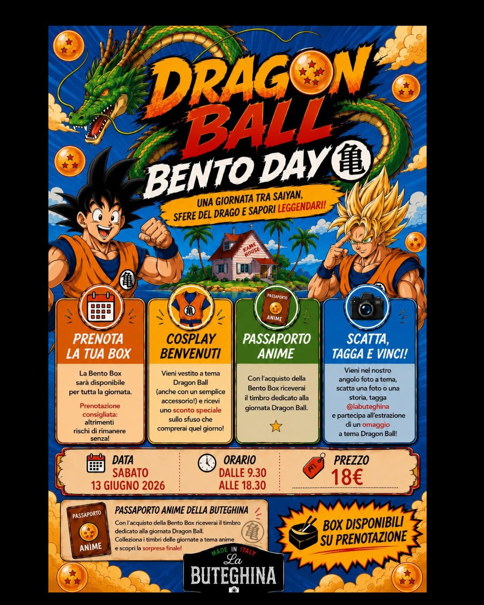
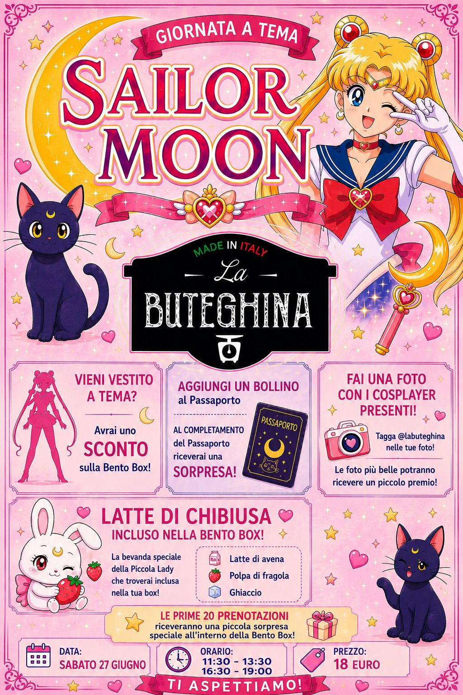
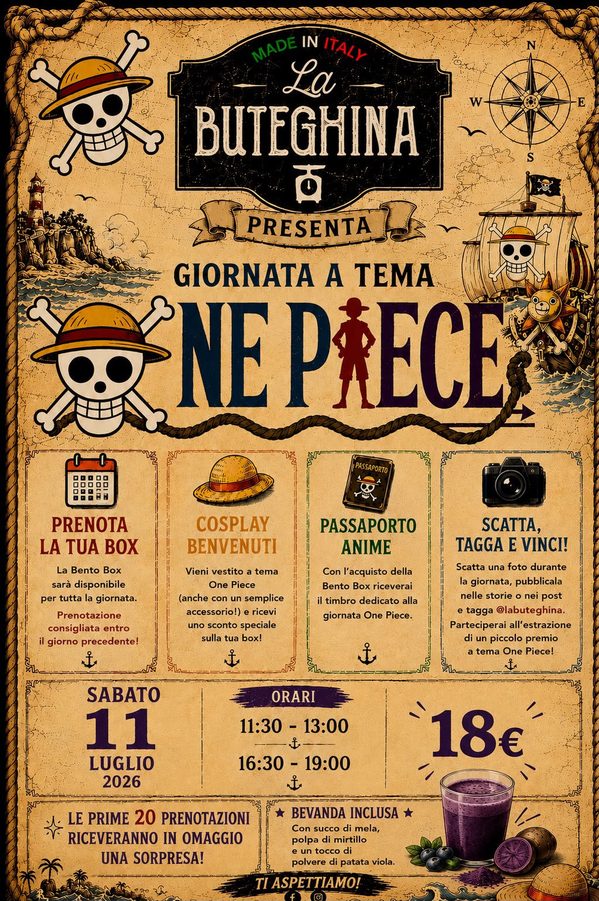
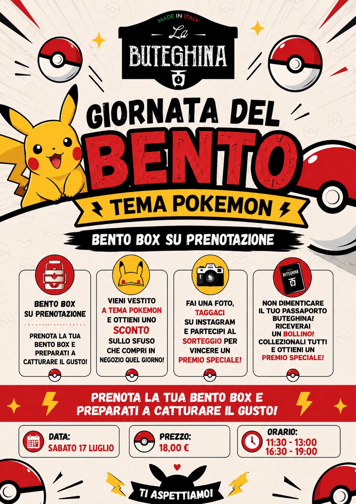

Bento Box
Ogni Bento Box racconta una storia. Anime, stagioni, festività ed eventi speciali si trasformano in un'esperienza da vivere... e da gustare.
Scopri le collezioniOgni Bento Box racconta una storia.
Le nostre Bento Box nascono dalla passione per il cibo, gli anime, i viaggi e la creatività. Ogni evento viene progettato attorno ad un tema diverso, con ricette dedicate, decorazioni realizzate a mano e tanti piccoli dettagli che rendono ogni esperienza unica.
Ogni tema racconta una storia.
Ogni Bento Box nasce da un'idea diversa. Anime, stagioni, ricorrenze e mondi fantastici prendono vita attraverso ricette, colori e piccoli dettagli studiati per sorprendere.
🐉 Dragon Ball
Un'avventura ricca di energia e sapori, dedicata a uno degli anime più iconici di sempre. Sei pronto a partire?
Scopri l'evento →🌙 Sailor Moon
Un viaggio tra magia, eleganza e dolcezza, ispirato alle guerriere Sailor e ai colori che hanno fatto sognare intere generazioni.
Scopri l'evento →🏴☠️ One Piece
Un viaggio nella Rotta Maggiore tra ricette ispirate all'equipaggio di Cappello di Paglia.
Scopri l'evento →⚡ Pokémon
Una Bento Box ispirata all'universo Pokémon, con piatti colorati e dettagli dedicati ai personaggi più amati.
Scopri l'evento →🍃 Studio Ghibli
Un viaggio tra natura, magia e sapori ispirati ai mondi creati dallo Studio Ghibli
Prossimamente →✨ Prossimamente...
Stiamo già lavorando alle prossime Bento Box. Chissà quale sarà il prossimo tema!? Potrebbe nascere proprio da una tua idea!
Proponi il tuo tema💚 Il tuo suggerimento potrebbe ispirare il nostro prossimo evento!

Dragon Ball
Quando il mondo degli anime incontra la cucina
Dragon Ball è stata la prima Bento Box organizzata da La Buteghina. Un evento nato per trasformare un semplice pranzo in un'esperienza da vivere, ricca di colori, richiami all'anime e tanta creatività.
Ogni elemento della box è stato progettato per ricordare personaggi, simboli e ambientazioni della serie, mantenendo sempre ingredienti di qualità e un perfetto equilibrio tra gusto ed estetica.
{kind=link}
{kind=link}

Sailor Moon
Un'esperienza ispirata alla magia, all'amicizia e ai colori delle guerriere Sailor
Sailor Moon è una bento box dedicata a uno degli anime più amati di sempre. Un evento pensato per ricreare un'atmosfera romantica e sognante, tra colori pastello, dettagli ispirati alle guerriere sailor e piatti preparati con cura.
Ogni elemento della Box richiama simboli, pianeti e trasformazioni iconiche della serie, trasformando il pranzo in un momento speciale dove gusto, fantasia ed emozioni d'incontrano.
{kind=link}
{kind=link}

One Piece
Un viaggio tra mare, avventura e sapori ispirati alla ciurma di Cappello di Paglia
One Piece celebra lo spirito dell'avventura e della condivisione. Ogni Bento Box è pensata per trasportare gli ospiti lungo la Rotta Maggiore, con ricette ispirate ai personaggi e ai luoghi più iconici della serie.
Dai colori vivaci ai piccoli dettagli decorativi, ogni portata racconta un pezzo del viaggio della ciurma di Luffy, trasformando il pranzo in un'esperienza coinvolgente da vivere insieme.
{kind=link}
{kind=link}

Pokemon
Un'avventura colorata dedicata al mondo dei Pokemon
La Bento Box Pokemon nasce per far rivivere la magia delle prima avventure tra Allenatori e creature leggedarie. Ogni piatto è studiato per richimare personaggi, colori e simboli dell'universo Pokemon in modo creativo e divertente.
Dalle decorazioni ai piccoli dettagli, ogni elemento è pensato per sorprendere grandi e piccoli, ragalando un'esperienza che unisce fantasia, buon cibo e tanti ricordi.
{kind=link}
{kind=link}

Studio Ghibli
Viaggio tra natura, fantasia e sapori ispirati ai capolavori dello Studio Ghibli
La Bento Box Studio Ghibli nasce per celebrare l'atmosfera unica dei film che hanno fatto sognare intere generazioni. Un evento pensato per immergersi in un mondo fatto di natura, piccoli dettagli e sapori che richiamano la magia delle opere di Miyazaki e dello Studio Ghibli.
Ogni preparazione è studiata per evocare l'emozione dei film attraverso colori, ingredienti e decorazioni, trasformando il pranzo in un'esperienza delicata, rilassante, ricca di fantasi, proprio come una passeggiata nei mondi invantati di Ghibli.